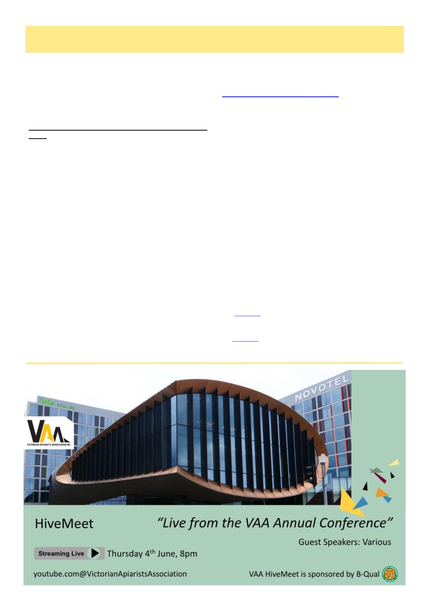

6
Australian Bee Journal
President’s Report, cont’d
more options, safe use of chemicals, beehives that sur-
vive, to be economically viable and for consumers to
trust our products and our practices.
> Annual conference is looming to be one of the more
important conferences in recent time>>>
VAA Annual Conference & AGM 2026: Register
Now!
It is hard to believe we are just a few weeks away
from this year‟s annual conference and AGM. The
conference organising subcommittee has been working
extremely hard to bring together another exciting and
engaging program. This year, the event is being held at
the Novotel Melbourne Airport. An accessible and
central location for attendees travelling from regional
Victoria, metropolitan Victoria, as well as interstate and
overseas.
We are particularly excited to welcome these three
distinguished industry experts:
Dr Peter Neumann, professor at the University of
Bern and Director of the Institute of Bee Health, and
chair of the COLOSS Association - the international
non-profit working to improve bee well-being across
more than 120 countries. (Via Zoom)
Dr Stephen Martin, chair in social entomology at
Salford University, Manchester. Widely recognised for
his pioneering work on the varroa mite and its associa-
tion with viruses, including deformed wing virus.
Dr Cooper Schouten, senior research fellow and di-
rector of Southern Cross University‟s Bee Research and
Extension Lab, whose work focuses on strategic bee-
keeping industry development with international expe-
rience across the Indo-Pacific.
VAA has held registration fees steady at the same
level as the past three years, reflecting our commitment
to making the conference as accessible as possible.
Registrations
are
now
open
at
www.vicbeekeepers.com.au/events. Last year‟s con-
ference sold out. We are getting better and bigger at
delivering our state conference. You will not want to
miss this year‟s program. With varroa establishing it-
self across our state, and the threat of resistant mites on
the horizon, now is the time to invest in your personal
and professional development as a beekeeper and, more
importantly, take every opportunity to engage with the
wider beekeeping community. Together, we build re-
silience. Together, we are strong.
Industry on edge, beekeepers stressed, concerned and
demanding to be heard >>>
Beekeepers need one voice more than ever, need one
home more than ever, and one guardian more than ev-
er. VAA is your peak body, and as a board we are
more than willing to hear your concerns, suggestions
and needs. We have an excellent long and established
relationship with our friends at AgVic.
VAA is looking to strengthen its ties with our affili-
ates. If your club needs VAA to act, to listen, to take
your concerns further then we want to hear from you.
Here are some additional resources to help beekeep-
ers navigate these challenging times:
Lifeline: Provides 24/7 crisis support and suicide
prevention services.
Website Phone: 131 144
Beyond Blue: 24/7 telephone mental health and
support service.
Website Phone: 1300 224 636
(Continued from page 5)
(Continued on page 7)